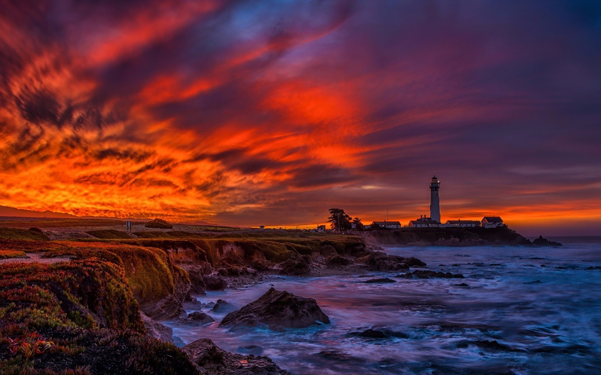
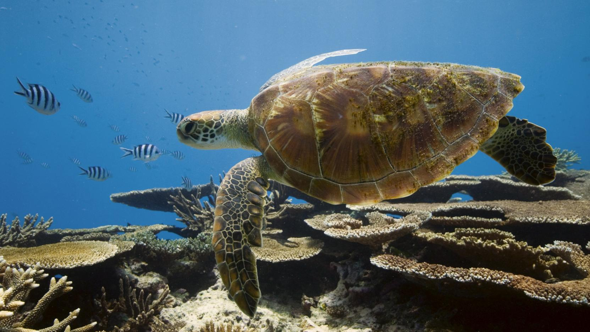
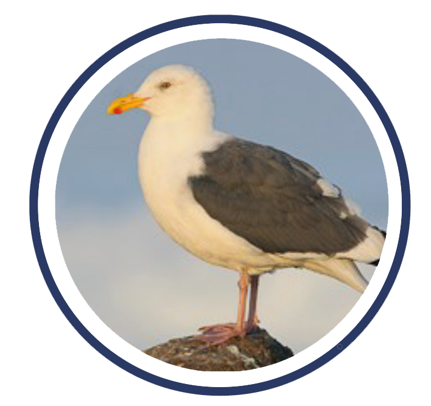
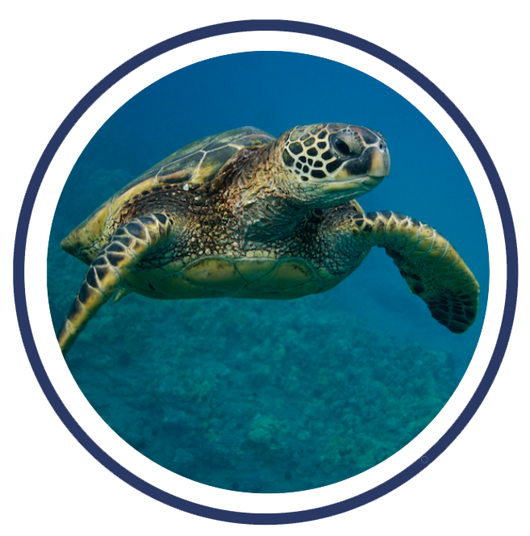
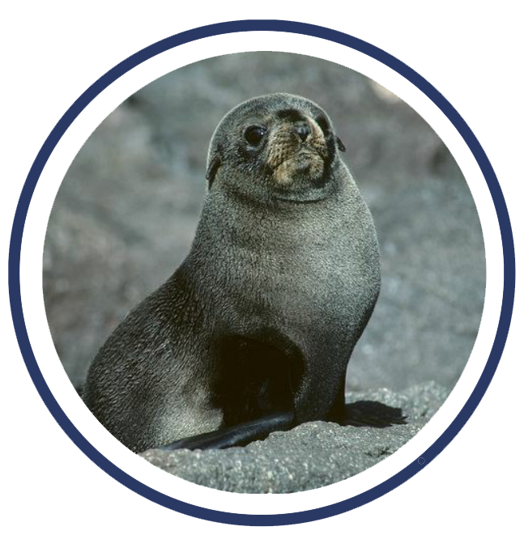
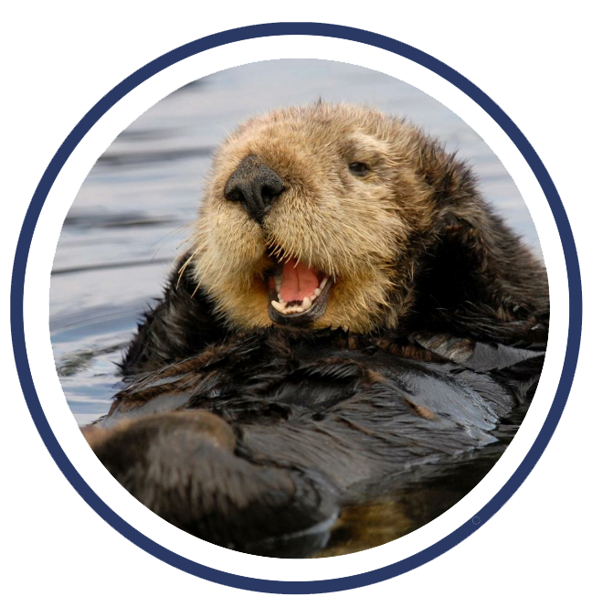
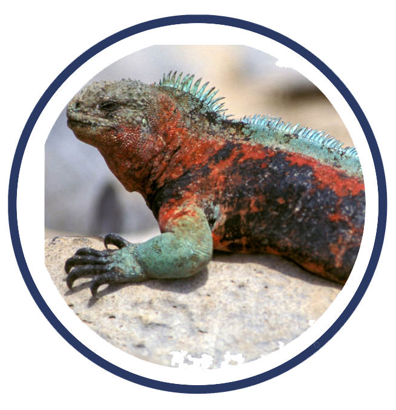
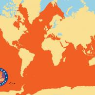

Overview
On this web page, we offer a brief overview of the Pacific Coast and some of its most common species. It will also explore some of the primary threats facing this ecological habitat, and what protection management programs are in place to protect against this degradation and destruction.
Created by: Katharine DeGolian, Julia Grady, Rebecca Barshay, and Sarah Elizabeth Payne.


Western Gull
The Western Gull can be found in a number of places along the immediate Western Coast. They breed on rocky islands off the coast. They forage at sea, along beaches, at dumps, and, as tourists and residents know, through human leftovers at restaurants and piers. They tend to roost in fields, dumps, and parking lots. The nest sites can exist on cliff ledges, under rocks, or on the ground… no specific necessities exist for their habitats. The Western Gull’s niche is that of the opportunist. It nests around colonies of other seabirds, where it can scavenge from unguarded eggs or chicks. It also tends to nest near colonies of California sea lions to hunt any pups that die of natural causes.
In terms of the Western Gull’s ecological history, their numbers have remained relatively stable. They have always been relatively common along the Western Coast. They have had no scares with population numbers to speak of. However, nesting at some colonies has been impacted in the past by effects of pesticides in the food chain. For example, after the introduction of insecticides following WWII, there was an increase in incidence of SNC (skewed sex ratio towards girls).
Green Sea Turtle
Green sea turtles are herbivores so they mostly eat algae and sea grasses. Juvenile sea turtles will also eat invertebrates such as crabs and jellyfish and sponges. Although some sea turtles will swim close to the surface to warm themselves up, the Pacific green sea turtle will come on shore to sunbathe with seals and sea birds. Green sea turtles mate every two to four years and come on shore to lay their eggs. A normal number of eggs laid is from 100-200. It takes around 2 months for the eggs to hatch. Once they hatch the baby sea turtles face great danger getting from the nest to the sea. Many predators catch and eat the vulnerable baby sea turtles on their journey from the land to the sea.
Turtles can grow to be up to 5 feet long and usually weigh an average of 700 pounds, making them the largest sea turtles in the world. Green sea turtles are not named for their shell color, but for the color of their skin. Their shells are usually a brownish green tint, but the coloring depends on the area in which they live due to the algae concentration on their shells. The turtles’ shells are heart shaped. Green sea turtles are powerful yet graceful swimmers because of their large paddle fins. Males are generally larger than females and have a longer tail. Their heads are proportionally much smaller than their body.


Guadalupe Fur Seal
The Guadalupe fur seal lives in the pacific ocean around in the tropical waters of southern California and Mexico, just east of the Guadalupe island. They have the ability to move on land by pulling their rear flippers underneath them, and also navigate waters as they use their front flippers to swim. Therefore they can be found in shallow, nearshore island waters that provide the caves, tide pools, boulders, crevices, and rock platforms they prefer. Not much is known about where they reside during their season of non-breeding besides that they travel northward, however when in breeding season they tend to live in caves and coastal rocky habitats on the eastern coast of the Guadalupe Island. Breeding season usually lasts from June to August, when females will arrive and give birth to a pup conceived in the previous season. Guadalupe fur seals are territorial and it is typical for males to fight for breeding territories with anywhere from 4 to 12 females to mate with.
The diet of the Guadalupe fur seal mostly consists of small marine invertebrates such as squid, and also a few fish. Recent studied founds adult females traveling all the way to the south side of the Guadalupe island and diving to an average depth of 17 meters just to find food. During breeding seasons, they take two to six day trips to feed at sea before returning to nurse their pups. Like all species of fur seals, males are normally larger than the females. There isn't tons of documented data on the distribution at sea of the Guadalupe fur seal, due to its geographical isolation and rarity of sightings.
Sea Otter
Even though sea otters are a part of the weasel family, their habitat is drastically different from other species of the same family. Otters have a difficult time walking at land meaning they are completely dependent on the waters they reside in. The sea otter’s habitat falls in the shallow waters of the northern Pacific. They are mainly found around Alaska, however, wild sea otters can also be found off the coast of California, Oregon, Washington, and Canada. Depending on where the sea otters live, they are separated into two subspecies: Northern sea otter (Enhydra lutris kenyoni) and the Southern sea otter (Enhydra lutris nereis). Southern sea otters are found in California and south, while Northern sea otters live everywhere above that range.
Sea otters play a significant role as a keystone species in the ecosystem. Otters feed on sea urchins which feed on kelp forests. By limiting the sea urchin population, the kelp forests are able to sustain and provide a habitat for other fish and marine species. Without sea otters, we would see a large decrease in fish populations in this area. This is a commonly used example of a trophic cascade. Due to their vital role in the ecosystem, the threats towards sea otter populations become all the more serious.


Marine Iguana
The marine iguana, sometimes called the Galapagos marine iguana, has spread to all the islands in the archipelago. Scientists predicted that million of years ago land iguanas living in South America drifted to sea and eventually landed on the Galapagos. It resides mostly on the rocky Galapagos shore to find heat after diving in the cold waters, but also can be found in marshes and beaches. It eats exclusively algae- eating 4-5 red algal species and occasional Ulta Iobata, also known as green algae. Females and smaller males dive for algae during low tides, however about 5% of iguanas dive for algae offshore.
Typically larger males engage in this adventurous behavior. Using flattened tails and long claws they can cling to rocks to navigate rough waters. They can then use their blunt snouts and small, razor sharp teeth to scrape the algae off of rocks. Since the marine iguana is a ectothermic animal, it is sensitive to the cold water they dive into to retreat their algae and bask in the sun afterwards. The methods of foraging change with season and temperature resulting in the evolution of efficiency methods in foraging. The subspecies of the marine iguana can be recognized by their different sizes, shapes, and colors.
Guadalupe Fur Seal
There are multiple threats to the Guadalupe fur seal, a few including hunting, entanglement, and environmental factors. Although hunting was more prominent in the 1900’s, hunters target the guadalupe fur seal for its dense, luxurious underfur. In the 1900’s they almost reached the point of extinction because of such poaching. Run ins with fishing gear and marine debris also pose a threat to the seals as they become entangled and stranded with injuries. The third threat can be categorized at environmental factors. Events such as hurricanes are responsible for a great amount of deaths for the guadalupe fur seal, although the exact population statistics are unknown.
Western Gull
The Western Gull faces multiple threats along the Pacific Coast. To start, natural disasters, specifically hurricanes, are detrimental for the birds as they are very vulnerable to climatic events. Additionally, tragedies such as oil pollution can harm Western Gulls in the area. Lastly, human disturbances pose a threat to the Western Gull population since the bird is very defensive of its territory.
Sea Otters
Pacific coast sea otters struggle with various threats in their natural habitat. For example, oil spills in areas otters live have two potentially fatal threat to the species: (1) the oil causes their fur to mat and leads to less insulation, frequently resulting in hypothermia and (2) the toxicity of the oil can lead to liver or kidney failure. Additionally, due to lack of food in sea otters’ overpopulated areas, they have begun expanding out into the ocean and into shark-infested areas, leading to a decline in northern and southern sea otter populations. Lastly, pollution from land frequently runs off into the waters, contaminating sea otter habitats with toxins and parasites.
Green Sea Turtles
Turtles and turtle eggs are a big food source for Asian and Central American culture. The hunters wait until the female turtle has laid her eggs and is weak so that they can kill her and obtain her eggs and meat. Turtle meat is customary to serve in Pacific Mexican cities on Easter. On that holiday in that region alone as many as 5,000 turtles are killed. Additionally, sea wall construction creates beach erosion making it very hard for turtles to come on shore to lay eggs which also poses a large threat on the turtle population if they aren’t able to effectively reproduce. Another threat to the turtles is getting caught in fishing nets. Green sea turtles are attracted to the bait put out for fish and become trapped in the nets and drown.
Marine Iguana
Threats to the marine iguana include climate change, other species and pollution. Changes in sea level and air temperature pose a threat to the marine iguana as it affects their habitat, ability to regulate their body temperature, and interferes with egg development. Other species also pose a threat as animals such as cats, rats, dogs, and pigs often prey on the marine iguana and their eggs. Lastly pollution such as oil spills and marine pollution destroys food reserves, nesting beaches, and a bacteria needed for them to digest algae.
Orcas as an Iconic Species
Habitat
Orcas can be found in oceans all over the world, most commonly in the Arctic and Antarctic. They can also frequently be spotted off the west coast of the United States and Canada. Orcas can be found in coastal waters and open ocean alike. They tend to travel together in pods of 5-30 whales, since they’re social animals. These pods are led by females and tend to have somewhat of a social hierarchy. Communication between pods varies, but all pods have some form of complex communication. 
Knowledge
Orcas, also known as “killer whales,” are the largest member of the dolphin family. They are highly social and composed of matrilineal family groups, called “pods.” These animals have large, long, rounded bodies with large dorsal fins at the middle of their backs. Due to their large size, they are among the fastest marine animals- able to reach speeds of approximately 35 miles per hour. Their bodies are predominantly black with white patches on their stomachs and near their eyes. They typically feed on fish, squid, birds, and marine animals. Similar to dolphins, Orcas use echolocation to determine their location and to hunt. Lastly, Orcas are a K-selected species. The Orca gestation is between 13-16 months. Then, once a calf is born in autumn, it remains with its mother for at least two years.
Management
Orcas are protected under the Marine Mammal Protection Act. They are also listed under the IUCN Red List and included in the Endangered Species Act. However, there are at least 50,000 Orca individuals worldwide. So, while their numbers are surprisingly little, they have enough individuals to sustain their population while environmental protection measures are being taken to protect these few and their offspring.
Part of the reason that Orcas need to be protected is because of their role in the economic Pacific Coast at large. They are causing a trophic cascade in the Northern Pacific ocean. Because of the numbers of Orcas in this area, the Alaskan Sea Otter populations have been steadily declining. This decline is caused by Orca’s hunting. As there are fewer sea otters, there are more sea urchins, which tend to eat kelp. So, as there are increasing amounts of sea urchins, there is destruction of kelp forests, affecting bald eagles, since bald eagles feed on kelp forest fish. It’s all one big loop, of which the Orcas play a key role.
Pacific Management Services and Other Conservation Efforts
The Pacific Management Services is a professional consulting firm specializing in helping businesses comply with environmentally toxic and hazardous materials, employee right-to-know, and safety laws/regulations. Businesses that use, store, transport, etc. any toxic, reactive or waste materials are subject to PMS inspection and requirements.
Many local, regional, state and federal regulatory enforcement agencies require annual or periodic registrations, reports, inventories of products used, waste generated, site maps, employee safety training and other documentation.
Your Business needs the client advocacy of Pacific Management Services to help maintain your environmental compliance on a continuous basis. Just as a C.P.A. compiles annual tax reports, "PacMan" completes annual toxic reports for similar reasons. Professional knowledge and understanding of current laws assure your environmental reports will be accurate.
One specific plan in place includes The Pacific Coast Salmon Plan Fishery Management Plan (FMP). It guides management of salmon fisheries in Federal waters (300-200) nautical miles off the coast of Washington, Oregon, and California. This covers the coastwide aggregate of natural and hatchery salmon encountered in ocean salmon fisheries.
As for birds’ protection, habitat loss/ degradation is a major threat. To address this threat in a coordinated fashion is key to effectively conserving shorebird populations at the national (and international) scale. So, Manomet Center for Conservation Sciences, under contract with the U.S. Fish and Wildlife Service, is developing the United States Shorebird Conservation Plan. This national Plan includes 11 regional plans reflecting major shorebird flyways within the US. The Northern Pacific Regional Working Group was formed under the auspices of the National Plan to formulate shorebird management goals for the Northern Pacific Region (NPR). The purpose of this management plan is to help shorebird management needs on a regional basis while considering Pacific Flyways. Within the NPR, the important shorebird habitats are coastal estuaries, beaches, rocky shorelines, and freshwater systems (natural and managed wetlands, flooded agricultural areas and riverine systems). These are selected as important areas because there have been numerous sites across these habitat types within the region that support at least 1,000 birds in one or more seasons.
Overall, the Pacific Managements Services conducts the necessary studies, which include the HazOps Study, Air Dispersion Modeling, and Seismic Studies in preparing the accurate documentation and programs required to support and encourage the State of California, the Country and Cities Risk Management Policy requirements.